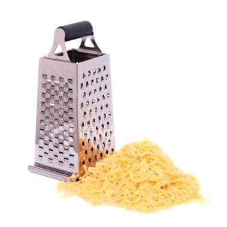

Cheese Grater Tip
Submitted by Nasyria Taylor Are you dreading cleaning the cheese grater? Have no worries! If you coat your cheese grater with nonstick spray, it will be blissfully easy to clean.
Adapted from BuzzFeedimage source
Are you dreading cleaning the cheese grater? Have no worries! If you coat your cheese grater with nonstick spray, it will be blissfully easy to clean.
Adapted from BuzzFeed